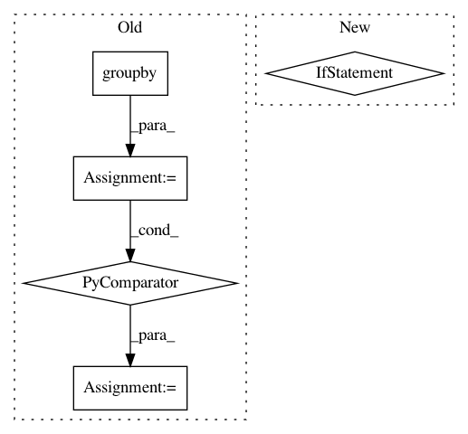

fdb77374313a8f53d5f5ab192ad88e96c4b65c23,src/python/pants/core/util_rules/stripped_source_files.py,,strip_source_roots,#Any#,23
Before Change
file_to_source_root = {
str(file): root for file, root in source_roots_result.path_to_root.items()
}
files_grouped_by_source_root = {
source_root.path: tuple(str(f) for f in files)
for source_root, files in itertools.groupby(
file_to_source_root.keys(), key=file_to_source_root.__getitem__
)
}
if len(files_grouped_by_source_root) == 1:
source_root = next(iter(files_grouped_by_source_root.keys()))
if source_root == ".":
After Change
else:
digest_subsets = await MultiGet(
Get(Digest, DigestSubset(rooted_files_snapshot.digest, PathGlobs(files)))
for files in source_roots_to_files.values()
)
resulting_digests = await MultiGet(
Get(Digest, RemovePrefix(digest, source_root))
In pattern: SUPERPATTERN
Frequency: 3
Non-data size: 5
Instances
Project Name: pantsbuild/pants
Commit Name: fdb77374313a8f53d5f5ab192ad88e96c4b65c23
Time: 2020-10-16
Author: 14852634+Eric-Arellano@users.noreply.github.com
File Name: src/python/pants/core/util_rules/stripped_source_files.py
Class Name:
Method Name: strip_source_roots
Project Name: has2k1/plotnine
Commit Name: 3c23a55f84ab81bf825f266bab38b5bd6cbd09b1
Time: 2018-07-31
Author: has2k1@gmail.com
File Name: plotnine/facets/facet_wrap.py
Class Name: facet_wrap
Method Name: compute_layout
Project Name: scipy/scipy
Commit Name: 6f6513963c3f568e5ad985a17a4aee0192223935
Time: 2019-07-17
Author: pete.mahler.larsen@gmail.com
File Name: scipy/spatial/_spherical_voronoi.py
Class Name: SphericalVoronoi
Method Name: _calc_vertices_regions